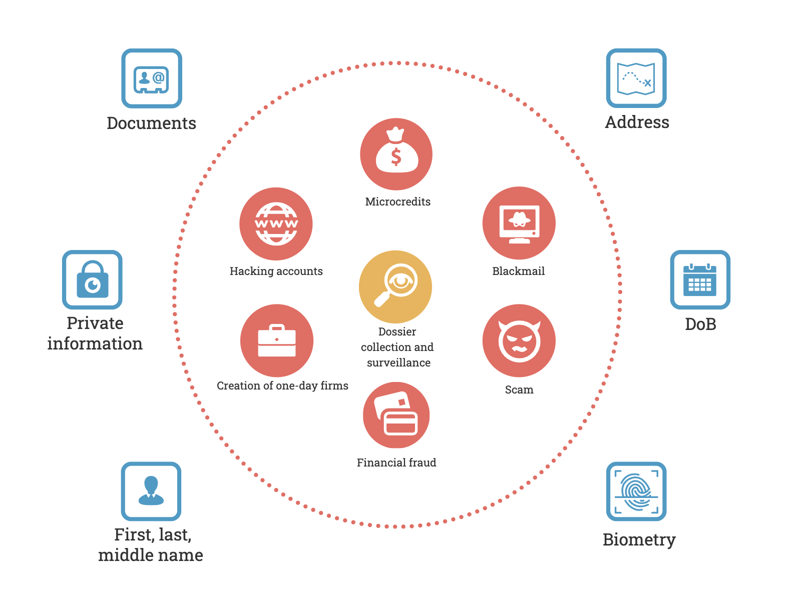

Manter-se fora da zona de acesso em nossa era digital é uma tarefa desafiadora. Mesmo um eremita pode ter um número de telefone de emergência, e, surpreendentemente, muitos animais de estimação agora têm suas próprias contas no Instagram.
A integração das redes sociais e ferramentas de comunicação em nossas vidas poderia ter sido extremamente benéfica se não fosse pelas inúmeras consequências negativas. Desde chamadas de falsos funcionários do Sberbank solicitando senhas de SMS até cobradores que exigem repagamento de um empréstimo emitido em seu nome.
Nos últimos anos, houve uma crescente tendência em direção à privacidade e proteção das informações do usuário, conforme demonstrado pelo GDPR, CCPA e LGPD. Essas regulamentações exigem que as empresas protejam os dados pessoais e evitem vazamentos, mas elas reduziram a coleta de dados sobre nós? Absolutamente não. Para elas, nossos dados são uma valiosa fonte de lucro.
No entanto, o endurecimento das normas legais para as empresas não é suficiente. Ao longo dos anos, você pode ter deixado inúmeras "migalhas de pão" na internet, incluindo antigas contas, anúncios, conversas públicas e fotos. Seguindo essas trilhas, atores maliciosos podem se aproximar de você e explorar as informações para diversos fins.
Fato interessante: Em 2017, um jornalista descobriu as contas anônimas no Twitter do diretor do FBI em apenas algumas horas. Tudo o que ele precisava era uma dica sobre sua existência, informações sobre seu filho e detalhes sobre sua tese de teologia.
A enorme quantidade de dados pessoais disponíveis sobre indivíduos, facilmente coletada por diversos meios, levou à popularidade do OSINT (Inteligência de Fontes Abertas), uma metodologia para coletar dados de fontes abertas. Embora o OSINT tenha sido inicialmente desenvolvido como uma metodologia de inteligência, agora é frequentemente associado a métodos de espionagem em pessoas. É importante lembrar que qualquer ferramenta ou metodologia pode ser usada para fins éticos e antiéticos.
Portanto, é crucial ter ferramentas de Contra-OSINT para proteger seus dados e garantir sua privacidade.
Nos próximos capítulos, analisaremos etapas simples, mas eficazes, que tornarão muito difícil para um observador externo coletar informações sobre você. Forneceremos pontos e ações específicos.
Este guia é útil não apenas para aqueles que estão familiarizados com o OSINT, mas também para amigos, conhecidos e pais que desejam aumentar sua privacidade online. Dedicar meia hora à leitura cuidadosa e à adoção de ações conscientes trará paz de espírito e proteção contra fraudes, vigilância, assédio e chantagem.
Ao mesmo tempo, não negligenciaremos a conveniência. Nosso foco é encontrar o equilíbrio certo entre privacidade e conveniência, garantindo que o uso da internet permaneça fácil.
É importante notar que o OSINT é a coleta de informações de fontes abertas. Infelizmente, dados sensíveis, como bancos de dados de números de telefone e informações de passaporte, muitas vezes acabam na internet.
Além disso, na Federação Russa, por meio da "verificação de antecedentes", é possível obter informações detalhadas sobre o proprietário de um número de telefone, carro ou apartamento nos registros e bancos de dados oficiais do governo. Infelizmente, muitas pessoas estão dispostas a fornecer acesso a informações que devem ser protegidas por dinheiro.
Reconhecemos que é impossível garantir anonimato completo e remover-se de todos os registros, mas é possível complicar tanto o processo de pesquisa que um atacante não conseguirá acessar facilmente suas informações.
O objetivo principal do guia é ensinar como proteger informações publicamente disponíveis e dificultar a busca de outras informações sobre você.
Para entender quais dados são mais importantes e requerem maior proteção, é necessário considerar as realidades modernas, especialmente na internet russa (Runet). Analisaremos isso em maior detalhe, e para sermos objetivos, usaremos OPSEC (Segurança Operacional).
OPSEC, assim como OSINT, se origina da inteligência americana. Ele envolve a análise e proteção de informações críticas.
Vamos começar listando todos os dados primários que de alguma forma revelam nossa identidade e existem fisicamente fora da internet.
Essa lista pode não parecer extensa, mas ter acesso a pelo menos parte dessas informações permite que alguém finja ser você e engane terceiros. Por exemplo, enviar mensagens a amigos solicitando uma transferência urgente de dinheiro devido a uma situação complicada.
Lembre-se de que os golpistas não necessariamente estão interessados especificamente em sua identidade. Por exemplo, eles podem adquirir um banco de dados com centenas de "novos" passaportes para vincular dados de passaporte às carteiras eletrônicas QIWI e aumentar os limites de retirada de dinheiro.
Qualquer dado pessoal pode ser utilizado. Por exemplo, a recuperação de acesso a contas de redes sociais frequentemente requer responder a uma pergunta de segurança. Assim, o conhecimento do nome de solteira de sua mãe ou de seu músico favorito aumenta as chances de invasão.
Fato interessante: Um caso de grande repercussão ocorreu em 2012 capturando 4 contas de uma pessoa de uma vez, com base apenas no endereço, nome e email. Uma elegante sequência de recuperação de acesso — primeiro usando dados conhecidos e depois vinculando dados falsos — permitiu o acesso inicial a Amazon, GMail, Apple, Twitter e, posteriormente, a exclusão remota dos dados dos dispositivos da pessoa.
Você pode ter ficado confuso com o termo "dados biométricos", mas, infelizmente, o uso deles já é parte de nossas vidas. Ferramentas de pesquisa facial baseadas nas mesmas tecnologias usadas para desbloquear um telefone pessoal pela câmera frontal e bancos de dados extensivos das redes sociais são comuns. Quando você posta sua foto online, deixa uma oportunidade para que alguém o localize.
Conforme o processo OPSEC, analisaremos quem pode estar interessado nesses tipos de ações e como eles podem utilizar informações sobre nós. Vamos examinar casos populares de uso de dados primários no diagrama abaixo e tirar conclusões.

O que pode ser feito com nossos dados? Certamente você percebeu que a maioria dos itens está relacionada a ganhos financeiros. A motivação financeira de golpistas não requer explicação. A única coisa a observar é que o dinheiro pode ser roubado não apenas de você, mas também de outras pessoas. Nesse caso, nossa participação no processo criminal se torna crítica, já que podemos ser tanto testemunhas quanto acusados.
Os benefícios de coletar informações abrangentes sobre você, incluindo acesso à sua correspondência, são menos claros. Essas ações podem levar ao assédio doméstico, espionagem, chantagem, entre outros. A única certeza é que, na maioria dos casos, isso resulta em prejuízos pessoais e invasão de privacidade.
Essas ameaças são compreensíveis e muitas vezes regulamentadas por lei. Não faz sentido listar artigos relacionados a perdas financeiras, pois existem muitos deles, e a coleta de dados pessoais é coberta pelo Artigo 137 do Código Penal da Federação Russa. No entanto, é importante reconhecer que é necessário um motivo sério para iniciar um processo e que a participação em tais processos é estressante. Portanto, retomando a posição já mencionada: nosso objetivo principal é proteger nossos dados e evitar ameaças.
É importante entender que o conhecimento de dados primários por si só não é suficiente para executar esquemas fraudulentos. Esses métodos são baseados em engenharia social e envolvem interações remotas por meio de chamadas ou mensagens. Isso implica que já assumimos que os adversários possuem nossos dados secundários ou identificadores virtuais como números de telefone, endereços de e-mail e URLs de contas em redes sociais. Obter informações sobre esses dados também é igualmente ameaçador.
Cada tipo de dado será descrito com mais detalhes nas próximas seções. Por enquanto, concentremo-nos no fato de que quanto mais dados caírem nas mãos erradas, mais sérias podem ser as consequências. Portanto, a principal lição a ser aprendida é que você deve controlar a quantidade de informações disponíveis sobre você, evitar sua disseminação desnecessária e monitorar seu uso.
Agora, vamos discutir o conceito de Higiene Digital.